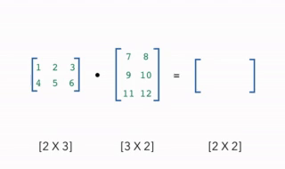

12. Introducción a numpy.#
En el cuaderno anterior hablamos brevemente de la librería de numpy. En este cuaderno exploraremos más a detalle su uso.
import numpy as np
12.1. Creación de arrays (arreglos)#
Creamos un array unidimensional utilizando la función np.array():
# Creación de un arreglo
arr = np.array([1, 2, 3, 4, 5])
print("Arreglo original:", arr)
# Multiplicación por un escalar
arr_escalar = arr * 2
print("Arreglo después de multiplicar por 2:", arr_escalar)
# Suma de arreglos
arr_suma = arr + arr
print("Suma del arreglo consigo mismo:", arr_suma)
Arreglo original: [1 2 3 4 5]
Arreglo después de multiplicar por 2: [ 2 4 6 8 10]
Suma del arreglo consigo mismo: [ 2 4 6 8 10]
Un ejemplo común son las imágenes, que se pueden representar como arreglos
# Creación de números aleatorios
np.random.randint(0, 255, (3, 5, 5))
array([[[183, 241, 4, 211, 176],
[240, 244, 222, 39, 143],
[167, 205, 61, 67, 204],
[213, 159, 188, 47, 17],
[108, 173, 227, 212, 103]],
[[213, 193, 165, 151, 250],
[244, 53, 97, 164, 9],
[ 72, 164, 179, 4, 78],
[ 75, 196, 209, 191, 131],
[138, 55, 104, 66, 238]],
[[134, 182, 144, 252, 12],
[ 99, 127, 109, 72, 75],
[ 57, 202, 150, 142, 66],
[100, 16, 174, 223, 23],
[ 39, 210, 165, 174, 87]]])
12.2. Multiplicación de matrices y vectores#
NumPy facilita la realización de operaciones lineales como la multiplicación de matrices y vectores. Veamos cómo realizar estas operaciones utilizando la función dot para el producto punto.
Aquí hay un GIF que representa visualmente la multiplicación de arrays:
{kind=link}
# Creación de dos matrices
A = np.array([[1, 2], [3, 4]])
B = np.array([[5, 6], [7, 8]])
# Multiplicación de matrices
producto_matricial = np.dot(A, B)
print("Producto matricial de A y B:\n", producto_matricial)
#Para el producto punto de dos vectores, utilizamos la función dot() de NumPy:
# Creación de dos vectores
v1 = np.array([1, 2])
v2 = np.array([3, 4])
# Producto punto de vectores
producto_punto = np.dot(v1, v2)
print("Producto punto de v1 y v2:", producto_punto)
Producto matricial de A y B:
[[19 22]
[43 50]]
Producto punto de v1 y v2: 11
12.3. Cambios de forma y la forma de los arreglos#
La forma de un arreglo es una tupla de enteros que indica el tamaño del arreglo en cada dimensión. NumPy ofrece varias maneras de cambiar la forma de los arreglos sin cambiar su contenido. Esto es especialmente útil para preparar datos para operaciones específicas.
# Creación de un arreglo de 9 elementos
arr = np.arange(9)
print("Arreglo original:", arr)
# Cambio de forma a una matriz 3x3
arr_reshaped = arr.reshape((3, 3))
print("Arreglo después del cambio de forma a 3x3:\n", arr_reshaped)
# Obtención de la forma de un arreglo
print("Forma del arreglo reconfigurado:", arr_reshaped.shape)
Arreglo original: [0 1 2 3 4 5 6 7 8]
Arreglo después del cambio de forma a 3x3:
[[0 1 2]
[3 4 5]
[6 7 8]]
Forma del arreglo reconfigurado: (3, 3)
12.4. Operaciones permitidas#
Gracias a la flexibilidad de NumPy, podemos realizar una amplia gama de operaciones matemáticas y lógicas sobre arreglos. Esto incluye, pero no se limita a, adiciones, sustracciones, multiplicaciones y divisiones elemento a elemento, así como aplicaciones de funciones universales (ufuncs) para operaciones más complejas.
# Operaciones elemento a elemento
arr1 = np.array([10, 30, 40])
arr2 = np.array([1, 2, 3])
suma = arr1 + arr2
print("Suma elemento a elemento:", suma)
# Resta
resta = arr1 - arr2
print("Resta elemento a elemento:", resta)
# Multiplicación
multiplicacion = arr1 * arr2
print("Multiplicación elemento a elemento:", multiplicacion)
# División
division = arr1 / arr2
print("División elemento a elemento:", division)
# Aplicación de una función universal (ufunc)
raiz_cuadrada = np.sqrt(arr1)
print("Raíz cuadrada de arr1:", raiz_cuadrada)
Suma elemento a elemento: [11 32 43]
Resta elemento a elemento: [ 9 28 37]
Multiplicación elemento a elemento: [ 10 60 120]
División elemento a elemento: [10. 15. 13.33333333]
Raíz cuadrada de arr1: [3.16227766 5.47722558 6.32455532]
12.5. Métodos más usados#
Presentamos los métodos más utilizados en numpy
x = np.array([1,3,2,2,5,5,5])
# Suma de los elementos de x
np.sum(x)
# Valor máximo de x
np.max(x)
# Valor mínimo de x
np.min(x)
# Indice donde se encuentra el valor 2 en x
np.where(x==2)
(array([2, 3], dtype=int64),)
print(np.zeros(5))
print(np.zeros((2, 3)))
print(np.ones(5))
print(np.ones((2, 3)))
print(np.arange(1,8,1))
print(np.linspace(0,1,10))
print(np.repeat(5,10))
[0. 0. 0. 0. 0.]
[[0. 0. 0.]
[0. 0. 0.]]
[1. 1. 1. 1. 1.]
[[1. 1. 1.]
[1. 1. 1.]]
[1 2 3 4 5 6 7]
[0. 0.11111111 0.22222222 0.33333333 0.44444444 0.55555556
0.66666667 0.77777778 0.88888889 1. ]
[5 5 5 5 5 5 5 5 5 5]
# generar muchos números al azar
np.random.randint(100, 200, size=7)
array([131, 176, 176, 151, 199, 147, 118])